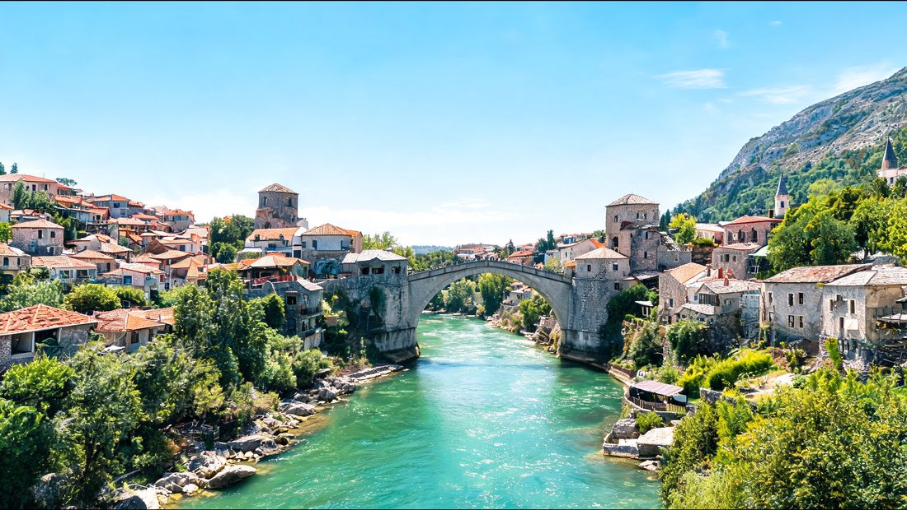
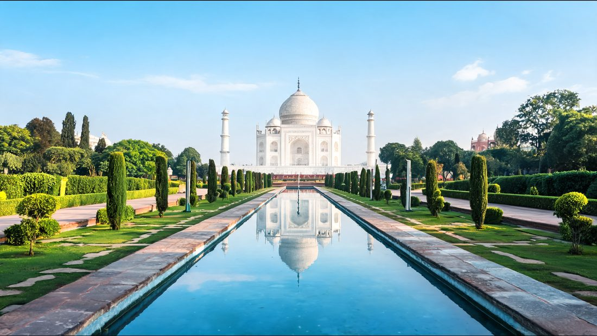
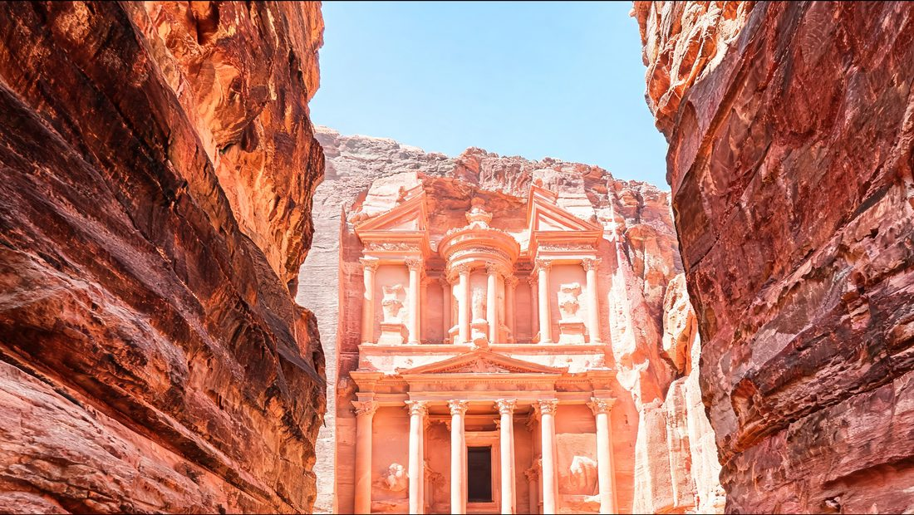

Saraybosna ve Mostar Gezi Rehberi: Bosna Hersek'te Görülecek Yerler
Başçarşı, Gazi Hüsrev Bey Camii, Mostar Köprüsü ve Blagay Tekkesi: Bosna Hersek turunda görülecek yerler ve gezi öncesi pratik notlar.
Devamını oku →

Hindistan'a ilk kez gidecek gezginlerin en çok tercih ettiği rota, Delhi, Agra ve Jaipur şehirlerinin oluşturduğu "Altın Üçgen"dir. Babür İmparatorluğu'nun anıtsal yapıları, Racastan'ın renkli sarayları ve Hindistan'ın kalabalık, canlı sokakları bu rotada bir araya gelir. Bu rehberde Hindistan turunun başlıca duraklarını anlattık.
Başkent Delhi, dar sokaklı Eski Delhi ile geniş bulvarlı Yeni Delhi'den oluşur. Eski Delhi'de Babür İmparatoru Şah Cihan döneminden kalma Cuma Mescidi (Jama Masjid) ve Kızıl Kale bulunur. UNESCO Dünya Mirası Listesi'ndeki Kutub Minar ve Hümayun Türbesi, şehrin en çok ziyaret edilen yapılarındandır. Yeni Delhi'de ise Hindistan Kapısı (India Gate) ve hükümet binaları yer alır.
Tac Mahal, Babür İmparatoru Şah Cihan'ın eşi Mümtaz Mahal'in anısına 17. yüzyılda yaptırdığı beyaz mermer türbedir. Dünyanın en tanınmış yapılarından biri olan Tac Mahal, 1983'te UNESCO Dünya Mirası Listesi'ne alınmıştır. Işığın değişimine göre mermerinin renk tonları da değişir; bu yüzden sabah saatleri özellikle güzeldir.
Agra'daki kırmızı kum taşından Agra Kalesi de Babür döneminin önemli yapılarındandır. Şehrin yakınındaki Fatehpur Sikri, Ekber Şah'ın 16. yüzyılda kurduğu ve kısa süre başkent olarak kullandığı, bugün iyi korunmuş bir saray kentidir.
Racastan eyaletinin başkenti Jaipur, binalarının pembe tonlarıyla "Pembe Şehir" olarak bilinir. Kafes pencereli cephesiyle ünlü Hawa Mahal (Rüzgâr Sarayı), tepe üzerindeki Amber Kalesi ve Şehir Sarayı (City Palace) başlıca duraklardır.
Pencap bölgesindeki Serhend, İslam dünyasının önemli âlimlerinden İmam-ı Rabbani'nin (Ahmed Faruki Serhendi) türbesinin bulunduğu yer olarak Türk ziyaretçilerin ilgisini çeker. Yakındaki Çandigarh ise mimar Le Corbusier'nin planladığı modern bir şehirdir.
Fas Tur'un Hindistan turları Delhi, Serhend, Çandigarh, Jaipur, Agra ve Fatehpur Sikri'yi kapsar. Kalkış tarihleri için Tur Takvimi'ne bakabilirsiniz.
Delhi, Agra ve Jaipur. Bu üç şehir birbirine kara yoluyla bağlıdır ve Hindistan'ın en çok gezilen rotasını oluşturur.
Babür İmparatoru Şah Cihan, eşi Mümtaz Mahal'in anısına 17. yüzyılda yaptırdı.
Şehrin tarihî bölgesindeki binaların cepheleri pembe tonlarında boyanmıştır.
Turumuzun güzergâhında Serhend yer alır; günlük program ve ziyaret noktaları tur sayfasında yazar.

Başçarşı, Gazi Hüsrev Bey Camii, Mostar Köprüsü ve Blagay Tekkesi: Bosna Hersek turunda görülecek yerler ve gezi öncesi pratik notlar.

Kayaya oyulmuş şehir Petra, kızıl çöl Wadi Rum, Lut Gölü ve Ceraş: Ürdün turunun başlıca durakları ve bilmeniz gerekenler.

Gize Piramitleri, Karnak, Krallar Vadisi, Edfu, Kom Ombo ve Aswan: Nil cruise ile Büyük Mısır turunda görülecek yerler.